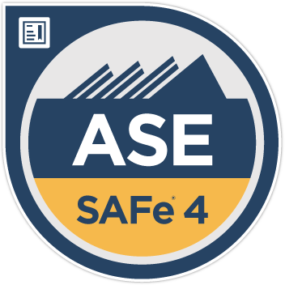
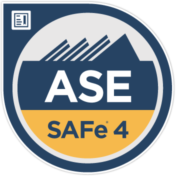
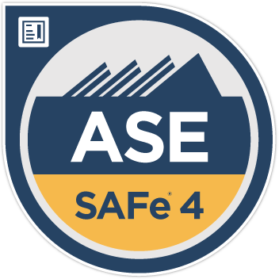
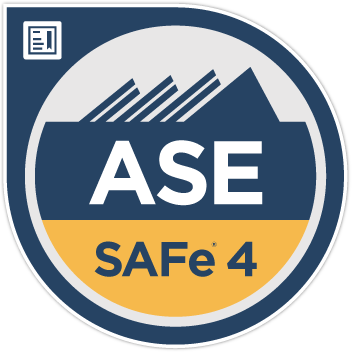

 

I am currently working as Sr. Cloud Architect with BP Americas. I am part of Technology team in bpx Energy subsidiary organization of BP.
I am IT professional with over 11 years of industry in delivering complete solutions and automations using Microsoft Technology Stack - Microsoft Azure, .NET Core, and Amazon Web Services, Development Platform and Ansible.
I always enjoy learning new technologies, updating my learnings with certifications, automating day-to-day work, being part of digital transformations, providing more self-serve capacity to end users & enhancing overall user experience by designing and implementing complex solutions using the latest technologies available. I have been responsible for design, delivery and execution of complex Cloud Migrations from on-premises to Azure IaaS, and PaaS with serverless technologies.
I am learning to build solutions in all cloud techologies to deliver digital transformations and migrate customer application landscape onto cloud.
I spend my off-working hours with my family and 2 sweet daughters. My hobbies where I like to spend my time - swimming, listening to audio books while on walk, and bike riding.
During this period, significant cloud optimizations were designed and implemented, resulting in substantial cost savings and enhanced operational efficiency for BPX Energy. These efforts included migrating complex workloads from Azure to AWS, leading to a notable reduction in cloud expenditures. Hybrid DNS architectures were established, and automation strategies were deployed to minimize manual efforts and improve reliability. The team successfully executed seamless migrations of key business applications, responded effectively to critical IT outages, and built highly available architectures for vital platforms such as SAP. Leadership initiatives fostered best practices in cloud engineering, increased productivity among business value squads, and supported specialized workloads in data science and machine learning. Overall, as cloud platform owner, the role was pivotal in delivering secure, optimized cloud services and guiding a diverse team toward operational excellence.
Technology Highlights: Microsoft AzureAD, AWS CloudFormation, YAML, Python, AWS Lambda, Ansible, AWS CfCT, Azure DevOps
Designing AWS cloud platform to extend CoE network for hosting application workload. Created automation to setup Single Sign-On for new workload accounts using AzureAD as identity provider. Creating infrastructure setup using infrastructure as code (AWS CloudFormation templates, CfCT, and Terraform) and deploying updates to infrastructure using configuration as code (Ansible Playbooks). Developed Ansible playbook to create/update firewall security rule. These automated deployment helped to deliver the stable platform by 45% earlier, also helps to resolve any issues by 65% faster. Following DecSecOps process to develop code with all security guidelines and practices, working closely with digital security team to take requirements and deploying code using automated release pipelines.
Technology Highlights: Microsoft AzureAD, AWS CloudFormation, YAML, Python, AWS Lambda, Ansible, AWS CfCT, Azure DevOps
Preparing requirements, design, and technical architecture documents for deploying Stonebranch universal controller and data mover gateway Developed and deployed custom universal templates like refreshing PowerBI dataset, logging Service-NOW tickets, triggering Azure Data factory pipeline and SQL Server Integration Service packages. Developing workflows in Stonebranch to trigger integrations on each platform like Azure Data Factory, SSIS, logic apps, and cron jobs. Designed, developed and deployed workflow of integration jobs related to critical report onto Stonebranch which helped to reduce critical incidents by 85% and saved $100K per month. Built ADFs, required VM to host SHIR and private links using Terraform.
Technology Highlights: Microsoft Azure, Azure DevOps, Terraform Azure Functions, Python, Stonebranch, Azure Data Factory, AzureAD
Developed and supported complex integrations in Azure Data factory for data ingestion and integrations Designed and Developed chat-based BOT as MS teams app for end users, this bot developed in C# based on Microsoft’s bot framework, cognitive services and machine learning for artificial intelligence - this app completely hosted on Azure’s serverless offerings using Devops pipeline for automated build/releases. Helped to left-shift L2 tasks to Service Desk team and could provide 45% discount to customer. Developed and trained ML models using Azure ML studio based on natural language processing and Linear models - Resulted in 95% less mis-routed tickets. Providing technical oversight and guidance during project engagements Developed custom graphana dashboard in Azure for support teams to monitor data integrations, also using designed notification mechanism using log analytics workspace to alert any failures
Technology Highlights: Microsoft Azure, Azure Functions, Azure Logic Apps, Azure DevOps, Azure Bot Framework, Azure API Management, Microsoft Cognitive Services, Azure App Services, ServiceNow, C#, .Net, .Net Core, JavaScript, REST API, PowerShell, Python, Machine Learning, Azure ML Studio
Handling custom applications and products deployed in client’s Azure environment. Responsible for designing Azure infrastructure for project teams to develop and deploy applications. Part of project advisory board to provide IT deployment recommendations to client and other vendors for application development and deployment. Migrated ArcGIS infrastructure from on-premise data center to Cloud with Hybrid architecture as part of L48 Identity program. Designed and supported BP Lower48’s Azure setup for implementing ExpressRoute connecting multiple sites, migrating azure workload from ASM to ARM deployment model and setting up federation services for application authentication via SAML tokens. Defined cloud network architecture using Azure virtual networks, VNET peering, UDRs, firewall, and express route to establish connectivity between on premise and cloud. Responsible for implementing Email security for Exchange Online using Proofpoint service. Supported implementation of internet facing web application security using AT&T’s Akamai service. Contributing to weekly status reports presented to CIO.
Technology Highlights: Microsoft Azure, Virtual Network, CDN, Exchange Online, ProofPoint, Check Point Firewall, Cloud Migration, Enabling Organization for O365, SAML, ArcGIS, ArcMap, ArcCatalog, Portal for ArcGIS, ArcGIS Server, ArcSDE on Microsoft SQL Server
Application Development project based on Agile methodologies. Responsible for business requirement analysis, application design and deployment, ArcGIS Environment setup for hosting the application. Designed and Developed application based on core GIS functionality using Geo-processing services, Model-builder, and ArcGIS API for JavaScript. Application model design was presented as use case in 15th ESRI India User Conference. Support the developed application to fix bugs and functional issues reported by end users. Leading 5 members team for project closure and success.
Technology Highlights: ArcGIS, ArcMap, ArcCatalog, Portal for ArcGIS, ArcGIS Server, ArcSDE on Microsoft SQL Server, ArcGIS API for JavaScript, ArcGIS Model-Builder, ASP.NET C#, SharePoint
Creation of System Appreciation Document and runbook documents for supported applications to capture design, data flow and deployment process. Contributed for project cost savings by creating automated tool to monitor servers, application, and web services health. Developed bespoke application on environmental for HSE safety operations. Developed tool for automating application entitlement review which identify inactive users in AD sends report to business users via email every quarter. This helped team to save 2-3 weeks of efforts. Transition activities – coordinating with users and onsite/offshore team to ensure transition activities are effective as required.
Technology Highlights: ArcGIS, ArcMap, ArcCatalog, Portal for ArcGIS, ArcGIS Server, ArcSDE on Microsoft SQL Server, ArcGIS API for JavaScript, ArcGIS Model-Builder, ASP.NET C#, SharePoint
Microsoft Azure
Analysis, Design & Solution
CICD & DevOps
Databases
Ansible
Amazon Web Services (AWS)
C# & .Net Framework
Chatbots, Digital Assistants & Automations
Comunication & Stakeholder Management
CloudFormation / CfCT
|
|
Projects |
Amazon Web Services, CfCT, CloudFormation, Terraform, TerraGrunt, Azure DevOps, AWS Lambdas, AWS Account Factory, AzureAD, Microsoft Graph, Python, Ansible
As a Cloud Architect, I am responsible for designing network architecture and standards on AWS for deploying Corp workload.
In this project, we are using existing AWS landscape to create new workload accounts to host Corp network, applications and data.
Complete setup of provisioning AWS accounts, deploying customization like IAM roles, SSO with AzureAD as IDP (SAML provider), SCP, using CfCT.
Core infrastructure provisioning developed in Terraform, and application workload using CloudFormation templates based on serverless framework.
Configuration of management devices like AD, SMTP relay and hardening of landscape is acheived via Ansible playbooks.
Microsoft Azure, Azure FunctionApp, API Management, Python, Microsoft Graph, Active Directory & Domain Services, LDAPS, Amazon Web Services, AWS Lambda, API Gateway, ServiceNOW
As a solution architect for this project, I was responsible for analyzing the operations ticket trends, identifying potential use cases for automation, configuring CICD pipeline, designing orchestrations for each use case/support problems/savings opportunity, perform POCs and implement orchestration, design and implement custom automations. Build automations using python on azure function app and aws lambda, these built automations will be published as APIs. APIs will be integrated with ServiceNOW orchestrations to automate user's requests. These proposed and designed solutions for all automation usecases are discussed in bpx Architecture Review Board - this board led by Enterprise Architect, and consists of security, application, network, data and cloud architects.
Stonebranch Universal Controller, Universal Data Mover Gateway, Universal Agent, Microsoft Azure, FunctionApp, C# .NET Core, Python, Microsoft Graph, Azure Data Factory, Azure Datalake Service, Azure EventHub, Azure Table Storage (NoSQL)
Project is to deploy and configure Stonebranch Universal Controller, Agent and Data mover Gateway (JScape SFTP). This is considered as
Enterprise scheduler to schedule tasks like ETL jobs.
Migrated jobs responsible for time sensitive report which defines priorities for field engineers, and summarizing business unit and well production
variance data to key decision makers (like CEO, COO, and CFO) which had major issues in the organization. This job also provides data to downstream applications.
Value:
Microsoft Azure, Azure FunctionApp, API Management, C# .NET Core, Microsoft Graph API, Microsoft Cognitive Services - LUIS, and QnA Maker, App Service Environment, Machine Learning, ServiceNOW
SHILA - Self Help Interactive Learning A>ssistant As part of continued service improvement, I proposed designed platform to design, develop and deploy automations which helps our business users to get IT support at their fingertips. IT services like "How-To" related help, reporting issues, requests like user administration, license management and cloud resource provisioning etc., My roles in this project are - Solution Architect, DevOps Engineer, and Business Analyst. Designed solution to host on Azure serverless platform and deployed chatbot as an app on Microsoft Teams Desktop application. Built ML model to predict the application instance, assignment group and priority of the issue being reported by user based on issue description. This helped to route the ticket to concerned team for speedy resolution. Created report to measure the chatbot adoptability which shows returning vs. new users, user feedback and opportunity to improve functionality.
Microsoft Azure, Azure FunctionApp, API Management, App Service Environment, Service bus, AKS, Web Apps
Designed standard hosting architecture for project team (developing cloud native apps). For 3-tier applications - front-end (with JQuery/reactJS and HTML) static website off of storage account application tier on server-less services with API management (for AuthN/AuthZ) and this can be reused with other applications Backend on managed service with private endpoints that application tier can communicate with. This helped project team to focus on developing functionalities, and time to market decreased by 25%.
Completed my M.Sc. in Computer Sceince with Merit from Coventry University located in United Kingdom (UK).
After being recruited for Infosys Limited, I was required to complete training in .Net for 4 months in fast-track (usually 6 months but I completed in 4 months) with CGPA of 4.84 before being deployed to industrial projects.
Completed my Bachelors of Engineering in Information Technology with 84% from Vidya Vikas Institute of Engineering Technology acrredited to Visvesvaraya Technological University (VTU), College is located in Mysore, Karnataka, India.
Cleared PUC with aggregate of 88% in Karnataka PU Board from Marimallapa’s PU College in Mysore, Karnataka, India.
I completed Senior Secondary with 84.8% from Bharathi Vidhya Mandira High School in Krishna Raja Nagara, Karnataka, India.
|
|